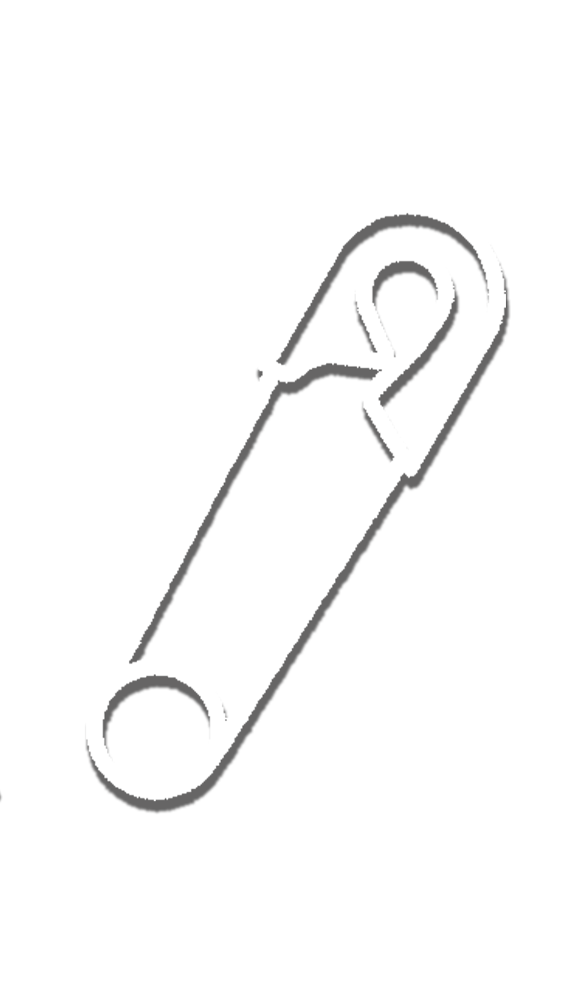

<ion-view title="Login" id="login">
  <ion-content padding="true" class="has-header" style="background-color: #272289;">
    <div class="spacer" style="width: 100px; height: 70px;"></div>
    <div style="text-align: center;">
      
    </div>
    <div class="spacer" style="width: 300px; height: 20px;"></div>
    <!--<ion-spinner icon="circles" ng-if="loading"></ion-spinner>-->
    <ion-slides options="options" slider="data.slider" style="height: 350px;">
      <ion-slide-page style="text-align: center;">
        
      </ion-slide-page>
      <ion-slide-page style="text-align: center;">
        
        <h2 style="color: white; margin: 0; padding: 0;">
          Welcome to the Community!
        </h2>
      </ion-slide-page>
      <ion-slide-page style="text-align: center;">
        
        <h2 style="color: white; margin: 0; padding: 0;">
          Seek a phone call or a chaperone.
        </h2>
      </ion-slide-page>
      <ion-slide-page style="text-align: center;">
        
        <h2 style="color: white; margin: 0; padding: 0;">
          Become an ally!
        </h2>
      </ion-slide-page>
    </ion-slides>
    <a ui-sref="facebook()" id="home-button1" class="button button-positive button-block">Connect With <i class="fa fa-facebook-official" aria-hidden="true"></i></a>
  </ion-content>
</ion-view>
